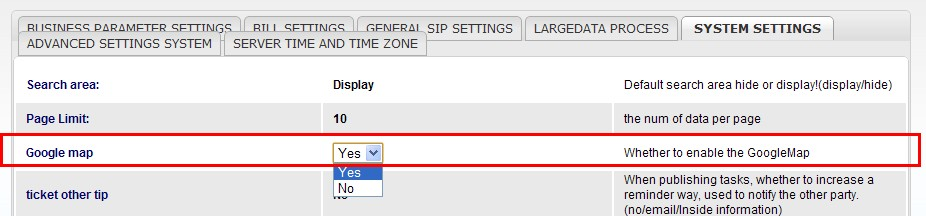
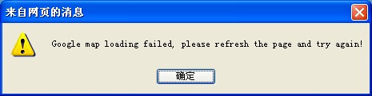
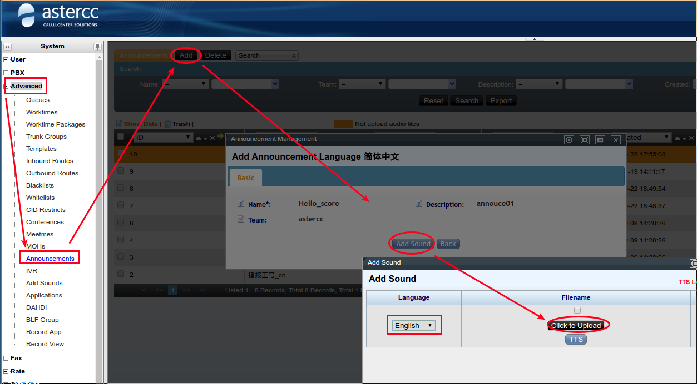
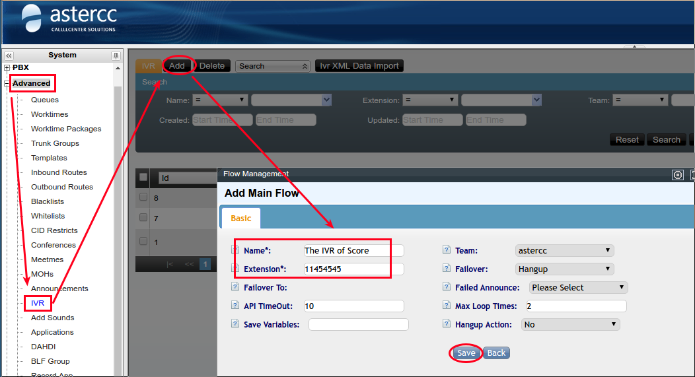
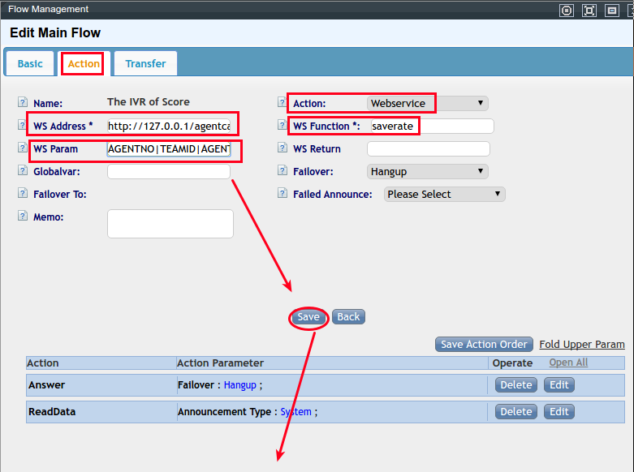
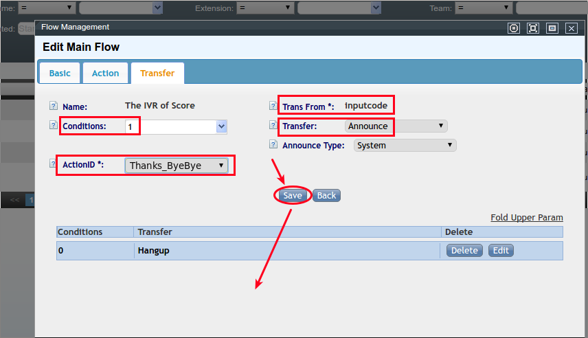
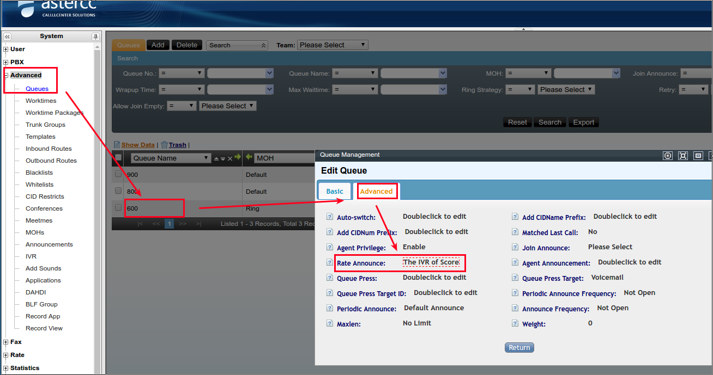
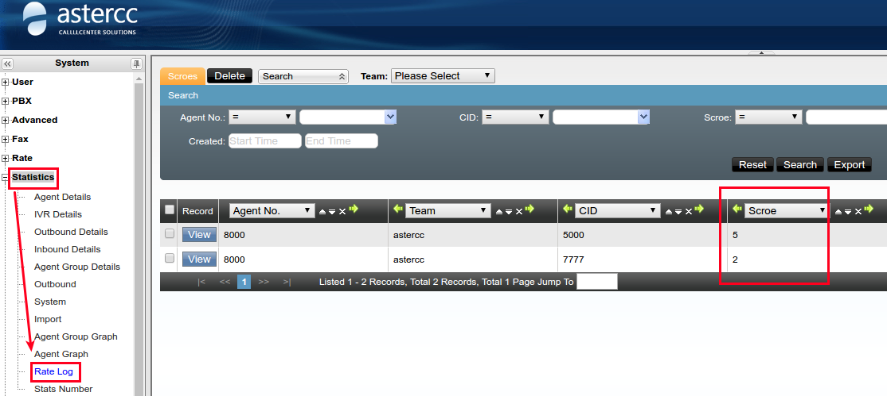

FAQ: Mensajería, encuestas y personalización¶
¿Qué proveedores de SMS soporta AsterCC de forma nativa?¶
AsterCC trae integración lista para varios proveedores chinos de SMS (瑞特维/365106, 满意通/b2m, 点点客/dodoca, 希奥/sioo, ArtSmart). Si tu proveedor no está en la lista, es necesario contactar al desarrollador para agregar el conector — no es autoservicio desde la interfaz web.
¿Cómo funciona un campo personalizado de tipo "enlace" (link)?¶
Un campo personalizado de tipo enlace agrega un botón o texto en la ficha del cliente que, al hacer clic, abre una URL externa en una ventana nueva — útil para enlazar mapas (Google Maps, Baidu, Amap, Tencent, Sogou) o cualquier sistema externo desde la pantalla emergente (screen pop) del agente.
- Se crea en Gestión de clientes → Campos personalizados, con tipo enlace.
- Modo de apertura manual: el agente debe hacer clic en el campo para que se abra el enlace.
- Modo de apertura automático: el enlace se abre solo al mostrarse la ficha.
- La URL admite variables que el sistema sustituye por el valor real del campo del cliente, con la sintaxis
##nombre_campo##(ej.##address1##o##contacto_direccion##). - Para atención entrante (que usa la tabla maestra de clientes), el campo se agrega sin asociarlo a ningún paquete de clientes específico.
¿Cómo hago que el sistema envíe un correo o SMS automático al cliente después de que el agente colgó?¶
Se configura como un evento de colgado (hangup event) dentro de la tarea de marketing outbound:
- Configura el servidor de correo y/o de SMS del sistema (mismos pasos que para el envío masivo de plantillas — ver Integrar envío de SMS para la parte de SMS).
- Crea la plantilla de mensaje (correo o SMS) con el contenido a enviar.
- En Marketing de salida → Tareas de marketing outbound, abre la tarea, y haz clic en Agregar evento de colgado.
- Define el evento:
- Objetivo: el estado de gestión del cliente que dispara el envío (
sin procesar,seguimiento,envío exitoso,envío fallido). "Contactado sin respuesta" cuenta como colgado sin que el agente haya podido atender. - Tipo: correo o SMS.
- Plantilla: la plantilla de mensaje creada en el paso 2.
Warning
Solo se dispara el envío si el agente marcó y guardó un estado de gestión real tras la llamada — si solo se edita la ficha del cliente sin haber marcado, o se guarda sin haber llamado antes, el sistema no envía el mensaje aunque el estado quede correctamente etiquetado.
¿Cómo se usa la base de conocimiento?¶
La base de conocimiento centraliza el know-how de soporte para que no dependa de la memoria de un agente individual, reduce trabajo repetido y acelera la resolución de consultas.
- Se administra desde Base de conocimiento → Base de conocimiento.
- Estructura: categorías de conocimiento (con subcategorías opcionales) que agrupan artículos de conocimiento individuales.
- Cada artículo tiene: nombre, etiqueta, estado (
borrador— no visible para agentes — opublicado— visible en la plataforma del agente), contenido con formato enriquecido y contenido de texto plano. - Los artículos admiten hipervínculos incrustados, con modo de apertura configurable (ventana nueva, actual, o padre); el primer hipervínculo del artículo se abre automáticamente al mostrarlo.
Ver también: Base de conocimiento y work orders.
¿Cómo elimino en bloque tareas antiguas de importación/exportación de datos?¶
Las listas de tareas programadas (importación de datos, tareas de borrado masivo, exportación de archivos y exportación de grabaciones) no tienen un botón de "borrado masivo" en la interfaz — hay que limpiarlas directamente en la base de datos:
-- Tareas de importación (tabla cc10_shellimports)
DELETE FROM cc10_shellimports WHERE id BETWEEN 1 AND 3000;
DELETE FROM cc10_shellimports WHERE exetime BETWEEN '2015-03-03 09:57:00' AND '2015-04-03 12:34:00';
-- Tareas de borrado masivo (tabla cc10_shelldeletes)
DELETE FROM cc10_shelldeletes WHERE created BETWEEN '2015-03-03 09:57:00' AND '2015-04-03 12:34:00';
-- Tareas de exportación de archivos y de grabaciones (tabla cc10_shellexports)
DELETE FROM cc10_shellexports WHERE exetime BETWEEN '2015-03-03 09:57:00' AND '2015-04-03 12:34:00';
Warning
Estas operaciones se ejecutan directamente sobre la base de datos de producción — respalda antes de correr un DELETE masivo.
¿Puedo elegir qué columnas aparecen en la barra de búsqueda de registros de llamadas?¶
Sí. La mayoría de las páginas guardan sus campos de búsqueda en la tabla cc10_search_fields, filtrando por la columna controller (pbxcdrs para registros PBX, campaign_cdrs para campañas de marcación y atención entrante). Cada fila tiene una columna status (enable/disable) que controla si el campo se muestra.
-- Ver los campos disponibles para registros PBX
SELECT fieldname FROM cc10_search_fields WHERE controller='pbxcdrs';
-- Ocultar el campo "duración total" en registros PBX
UPDATE cc10_search_fields SET status='disable' WHERE fieldname='Pbxcdr-duration' AND controller='pbxcdrs';
Para reactivar un campo, se cambia status de vuelta a enable. El cambio aplica al refrescar la página web y afecta a todos los usuarios por igual (no es una preferencia personal).
Excepciones — dos páginas no usan cc10_search_fields y se controlan desde la propia interfaz, sin tocar la base de datos:
| Página | Se controla desde | Tabla subyacente |
|---|---|---|
| Gestión de clientes de una campaña de marcación | Configuración de campos de fondo de la tarea de campaña | cc10_campaign_fields |
| Tabla maestra de clientes (personas/organizaciones) | Configuración de campos de la tabla maestra | cc10_customer_fields |
Registros PBX, de campaña y de atención entrante tienen ~31, ~31 y ~18 campos respectivamente disponibles en la barra de búsqueda (identificador de llamada, número que llama/llamado, DID, duración, costo, resultado de IVR, provincia/ciudad, etc.).
¿Cómo activo el mapa de Google en la plataforma del agente?¶
En Sistema → Configuración → Configuración básica del sistema, activa el parámetro del mapa de Google (sí/no).

Warning
Solo actívalo si el servidor tiene salida a internet. Si no la tiene, activar el mapa hace que la plataforma del agente cargue muy lento, y al abrir el mapa se muestra un error de carga. Las causas típicas del error de carga son: el servidor no tiene acceso a internet, el mapa está desactivado, o falló la carga del recurso del mapa.

(Fuente: zh+en — mismo procedimiento documentado en ambos idiomas.)
¿Cómo configuro una encuesta de voz para campañas de marcación predictiva?¶
Existen dos mecanismos de encuesta de voz distintos en AsterCC — no los confundas:
1. Encuesta de voz para tareas de pre-marcación (预拨号) — un cuestionario IVR completo con preguntas de opción única o texto:
- Genera el audio de cada pregunta: subiendo grabaciones en bloque, o generándolas con TTS desde PBX avanzado → Gestión de voz de llamada.
- Crea la encuesta en Gestión de encuestas → Encuestas, define los grupos de preguntas y el orden.
- Edita cada pregunta: tipo (opción única o texto), y su lógica de encuesta — a qué pregunta salta según la tecla presionada (las teclas 1–9 mapean a opciones; la tecla 0 no es válida como opción).
- Crea la tarea de marcación (outbound) en modo pre-marcación, asígnale la encuesta, y en configuración avanzada define el destino de acceso como "encuesta actual".
- En la pestaña de script, pon el modo en encuesta y selecciona la encuesta creada.
- Inicia la pre-marcación desde Pre-marcación → Marcador, por concurrencia máxima (esta modalidad no involucra agentes).
- Los resultados se consultan en Gestión de encuestas → Estadísticas de distribución de encuestas (porcentaje de respuestas) y el detalle en Marketing outbound → Gestión de calidad.
2. Encuesta IVR de evaluación al agente tras colgar (after call survey) — el sistema trae por defecto un IVR de evaluación, pero solo en chino; para español o inglés hay que crear uno propio:
- Sube los anuncios de voz de la encuesta en Avanzado → Anuncios.

- Crea un nuevo IVR en Avanzado → IVR, con esta secuencia de acciones:

- Answer (contesta la llamada).
- ReadData, reproduciendo el anuncio subido y capturando la tecla de calificación.
-
Webservice, apuntando a
http://<host>/agentcallrate.php?wsdl, funciónsaverate, con parámetrosAGENTNO|TEAMID|AGENTGROUPID|sessionid|inputcode|callerid|MODELTYPE|MODELID.
-
Una rama de transferencia para el resultado fallido (condición
0) y otra para el éxito (condición1) — estas condiciones son el valor de retorno del webservice, no la calificación numérica en sí.
-
Asigna el IVR a la cola desde Avanzado → Colas → Anuncio de calificación.

- Los resultados se consultan en Estadísticas → Registro de calificación.

¿Por qué no funciona la síntesis de voz (TTS) de AsterCC?¶
Puede estar desactualizado
El TTS integrado de AsterCC dependía de un servicio de Google que ya fue descontinuado, por lo que la generación de voz por TTS del sistema no funciona actualmente. Esta limitación depende de un servicio externo fuera del control de AsterCC — para encuestas de voz, usa el método de subida en bloque de audio grabado en vez de TTS (ver pregunta anterior sobre encuestas de voz).
Fuentes¶
raw/zh/常见问题及解答/呼叫中心系统中短信的集成.txtraw/zh/常见问题及解答/如何使用link类型的自定义字段传递参数.txtraw/zh/常见问题及解答/如何使用知识库.txtraw/zh/常见问题及解答/如何批量删除导入_导出任务列表数据.txtraw/zh/常见问题及解答/如何自定义呼叫记录里搜索界面显示哪些字段.txtraw/zh/常见问题及解答/如何设置启用谷歌地图.txtraw/zh/常见问题及解答/如何设置坐席挂机后自动推送邮件或短信.txtraw/zh/常见问题及解答/如何设置管理员页面搜索栏字段的显示与隐藏.txtraw/zh/常见问题及解答/语音问卷功能的使用方法.txtraw/en/faq/how_to_enable_google_map.txtraw/en/faq/how_to_implement_after_call_survey_for_agent.txtraw/zh/常见问题及解答/系统faq.txt